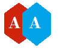

Angular All
ng-Directives
Google > Material Design Lite > How to install MDL
The ngIf directive removes or recreates a portion of the DOM tree based on an {expression}. If the expression assigned to ngIf evaluates to a false value then the element is removed from the DOM, otherwise a clone of the element is reinserted into the DOM.ngIf differs from ngShow and ngHide in that ngIf completely removes and recreates the element in the DOM rather than changing its visibility via the display css property. A common case when this difference is significant is when using css selectors that rely on an element's position within the DOM, such as the :first-child or :last-child pseudo-classes.Note that when an element is removed using ngIf its scope is destroyed and a new scope is created when the element is restored. The scope created within ngIf inherits from its parent scope using prototypal inheritance. An important implication of this is if ngModel is used within ngIf to bind to a javascript primitive defined in the parent scope. In this case any modifications made to the variable within the child scope will override (hide) the value in the parent scope.Also, ngIf recreates elements using their compiled state. An example of this behavior is if an element's class attribute is directly modified after it's compiled, using something like jQuery's .addClass() method, and the element is later removed. When ngIf recreates the element the added class will be lost because the original compiled state is used to regenerate the element.Additionally, you can provide animations via the ngAnimate module to animate the enter and leave effects.Directive InfoThis directive creates new scope.This directive executes at priority level 600.This directive can be used as multiElement